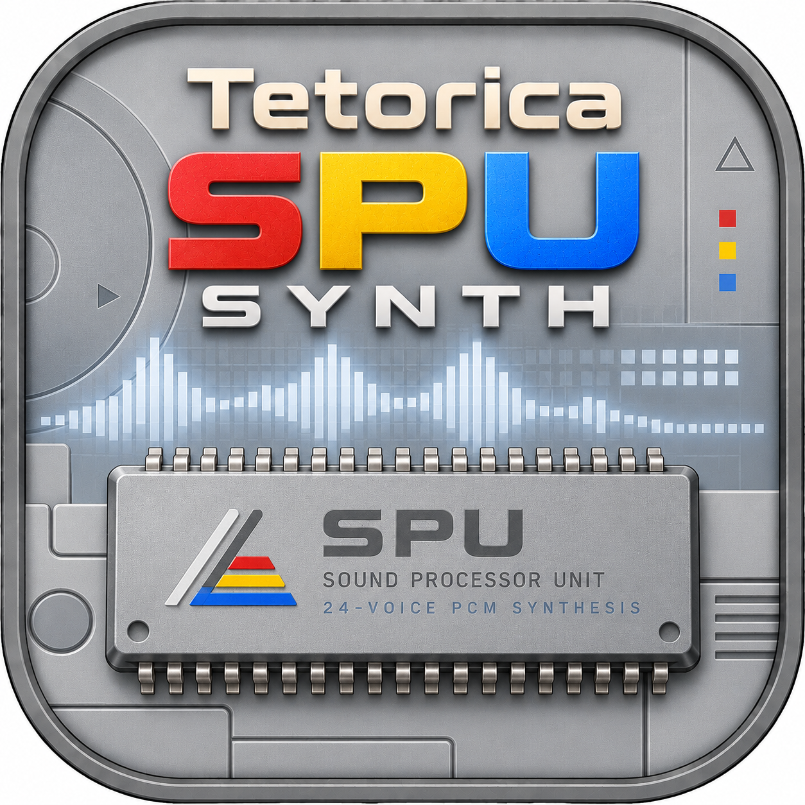

SAMPLE · ENVELOPE · REVERB
Tetorica SPU Synth
PlayStation 1 SPU synthesizer / emulator
Enable audio, then play a note to get started.
?
Preview the selected PSF1 / MiniPSF using a separate Play! HLE engine, with no external BIOS. Pause keeps the exact position; Stop returns to the beginning. Release the seek bar to silently advance a separate machine from the beginning; your previous position is kept until it succeeds. Pause stays paused; playing seeks continue playing; a stopped entry seeks into Pause. Cancel seek or Escape restores the previous position and state. Progress is shown. The initial limit is 30 minutes and 30 seconds of processing, checked between bounded native render slices. length + fade tags are reference range hints, without automatic end/fade; unknown duration is shown as ? with an expanding five-minute range. No long seek PCM/checkpoint cache is retained. Your edited instrument is kept. During playback, keyboard, Code or instrument edits stop the song. While paused in Synth view, PCM, ADSR, reverb, Morph, Noise and PMON edits keep the source position and frozen CH state. Switch to a PSF CH to compare, then return to Synth; Resume continues the original song with your edited sound kept. Loading another instrument, Reset instrument, Code or explicit Stop still stops the song. View / keyboard explicitly selects a PSF CH or Synth · edit and play. While paused, PSF CH view auditions that channel temporarily; Synth auditions your edited instrument. Capture copies one CH into Synth and selects that view, keeping the original song paused and its CH activity visible. Choose a PSF CH to return to source observation or audition. Save to presets keeps the copied instrument in Files. Neither keyboard mode leaves Pause. CH / Reference changes release the temporary notes, and Resume restores the editor before continuing the song. The song uses the Synth’s MAME-derived SPU DSP for ADPCM, ADSR, Noise, PMON, main / reverb volumes and reverb, with hardware mixing. CPU timing remains HLE, not cycle-exact. Unsupported volume sweeps, 8-byte-only voice addresses and transfer modes report an error. Master still works. Live shows the selected song channel in the PCM / ADSR / FX panels; Pause freezes that observation. Pause to Capture an ADPCM or Noise channel into Synth. Noise copies Clock, ADSR, voice levels and send; keys trigger envelopes rather than changing Noise pitch. Running Noise phase is not copied. Reference key reproduces its PITCH code without inferring a root note; a new key press starts a fresh envelope. PMON carriers, including Noise with PMON, and PSF2 are not supported. VAB files contain instruments, not songs.
Open a PSF set and choose an entry to play.
?
Read-only observations of the same physical SPU, up to 20 updates/s. Choose a channel to inspect without changing its sound. Live Off restores the edited instrument display while Code continues. Editing that instrument stops Code first. Stop restores your samples and settings. Intermediate register writes can be missed.
Run Code to observe its channels.
Live output envelope · Watch the sound’s level over time.
Audio sample
Load a recording or sound file to play it as an instrument. Up to 32 MiB / 30 minutes. Long recordings use Software audio beyond the PS1 RAM limit, with SPU pitch, ADSR and effects. Loading audio replaces the PCM cycle.
Choose a file, then play the keyboard.
Choose looping before loading a file. The root note sets the sample’s original pitch.
PS1 sound bank
Open a standard Sony VAB (version 6 or 7), matching VH + VB files, or a PSF1 / MiniPSF set with all its PSFLib files. Opening or extracting a bank keeps the current instrument.
Use Extract VAB beside the song controls to list its banks, then choose a Tone below.
No sound bank opened.
For PSF instruments, choose an entry and extract its banks, then select a bank and Tone. Unavailable Tones show a reason. Static extraction supports contiguous VAB banks and separated VH / VB when the complete sample data has one unambiguous match. Custom or runtime-packed banks may not be found. Song playback is independent of bank extraction. PSF2 is not supported. Extract ZIP archives before selecting their files or folder.
Imports the original ADPCM, loop, ADSR and tuning. One Tone plays across the keyboard; key zones, layers and driver vibrato/portamento are not applied. Volume and pan are approximations. Reverb send uses the current shared reverb settings. Loading a Tone stops notes and turns off PMON, Noise and Software morph.
Performance input
. Release notes follows the instrument’s release envelope. Stop all sound also clears held notes and reverb tails.
Software performance · the same SPU and samples as the controls above. Run: Ctrl/Cmd+Enter · Apply: Ctrl/Cmd+Shift+Enter.
Code is saved in Files. Loading a project never runs it automatically.
Console
?
Use const ps1 = await useSoundChip("ps1") and await its methods. Code addresses physical channels 0–23; CH1 is 0. It uses the loaded PCM, Audio or VAB Tone. PMON retains its paired physical voices: CH2 is the first carrier. Run starts fresh; Apply keeps context and named preparations. Stop fades the output and restores your edited instrument and sample bank.
Click guard is a software feature, On by default for keyboard and noteOn / noteOff. It smooths transitions within each voice and gives very fast releases a minimum of about 3 ms without changing ADSR codes or shortening longer releases. Changing it affects subsequent gate operations. For raw KON/KOFF use setNote + keyOn and keyOff; these always bypass the guard and still follow the programmed ADSR.
Code changes do not overwrite saved instruments. Live displays the selected channel in the same PCM / ADSR / FX controls. Live Off returns to editing; changing an instrument or loading a sample stops Code. Scheduling and liveFx are software features; SPU reverb remains the chip's shared effect.